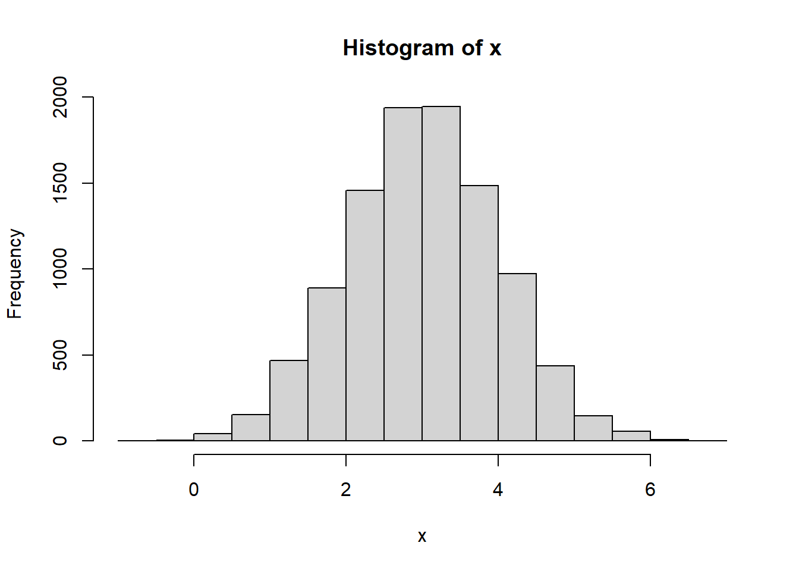
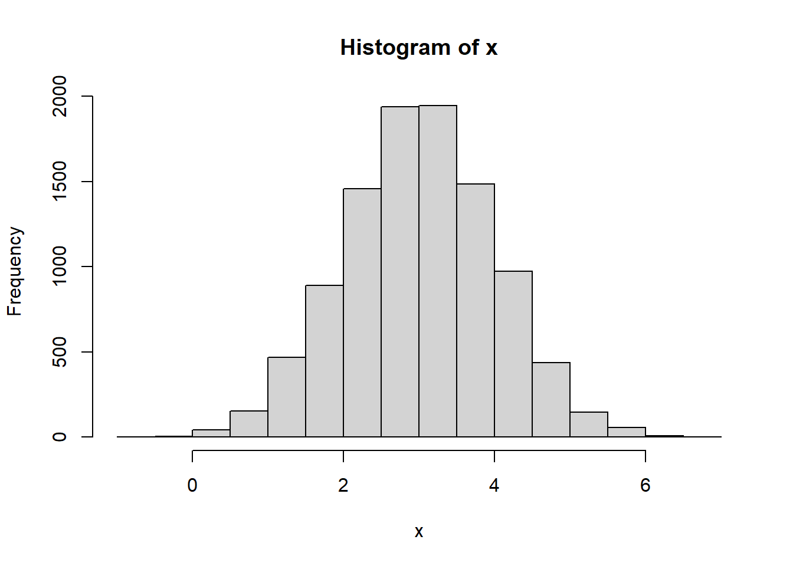
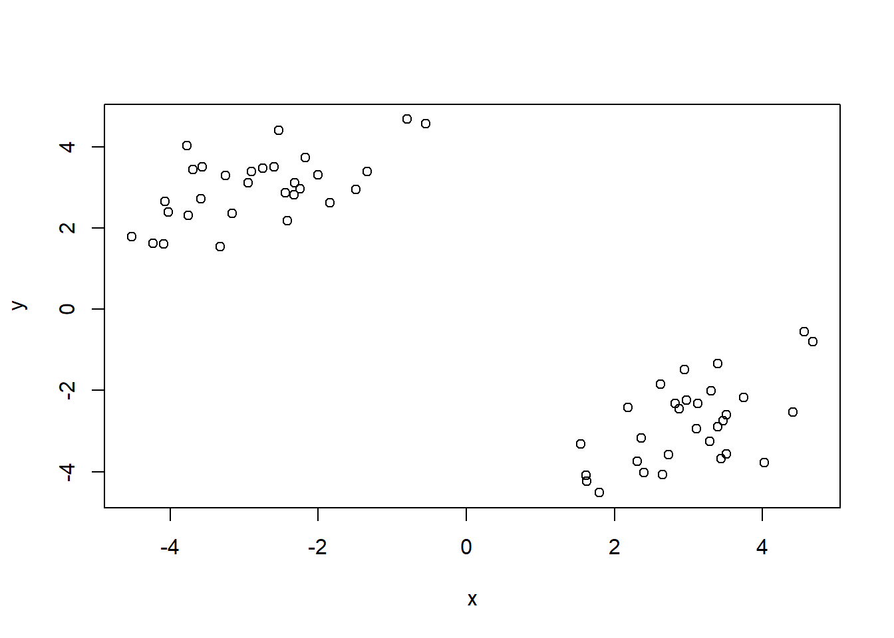
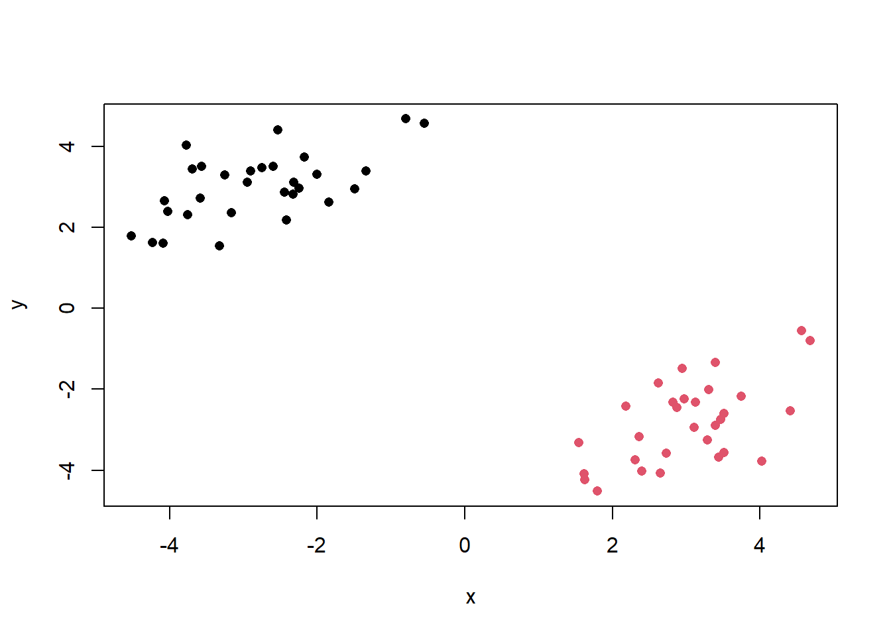
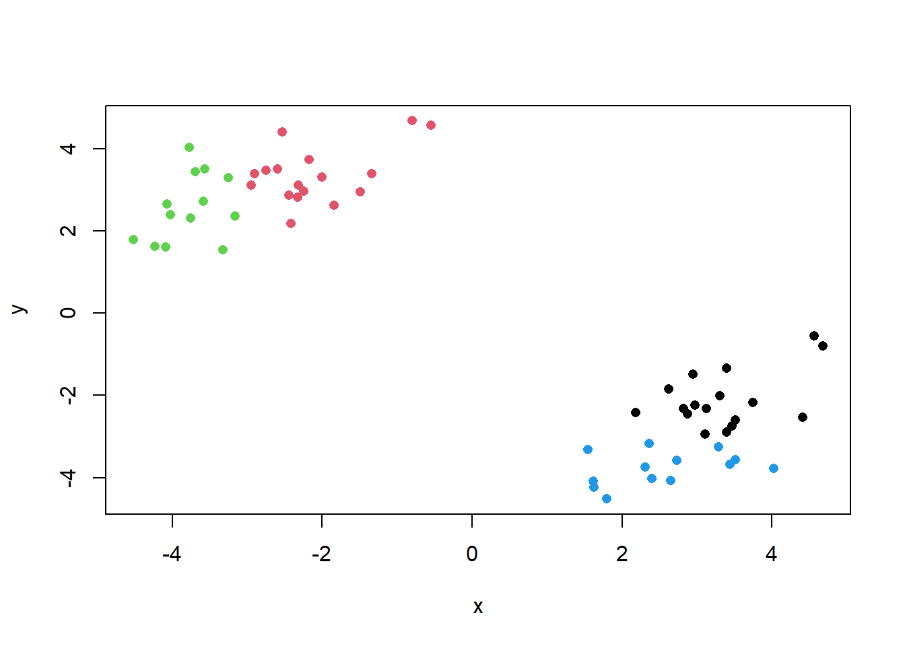
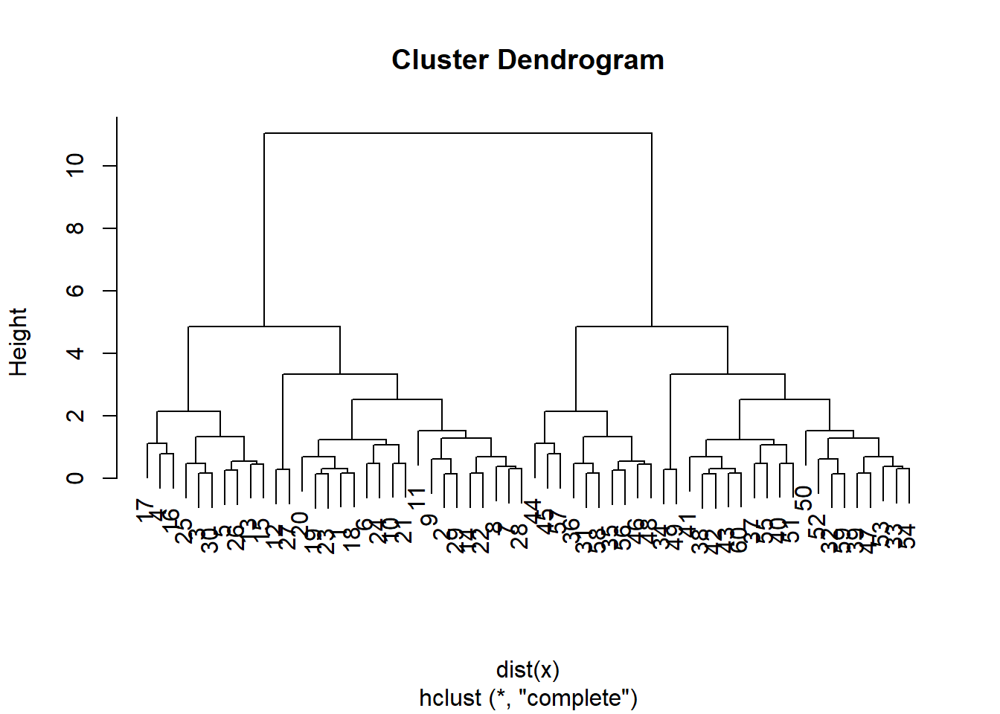
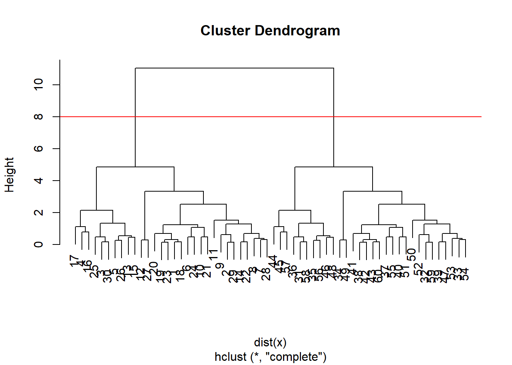
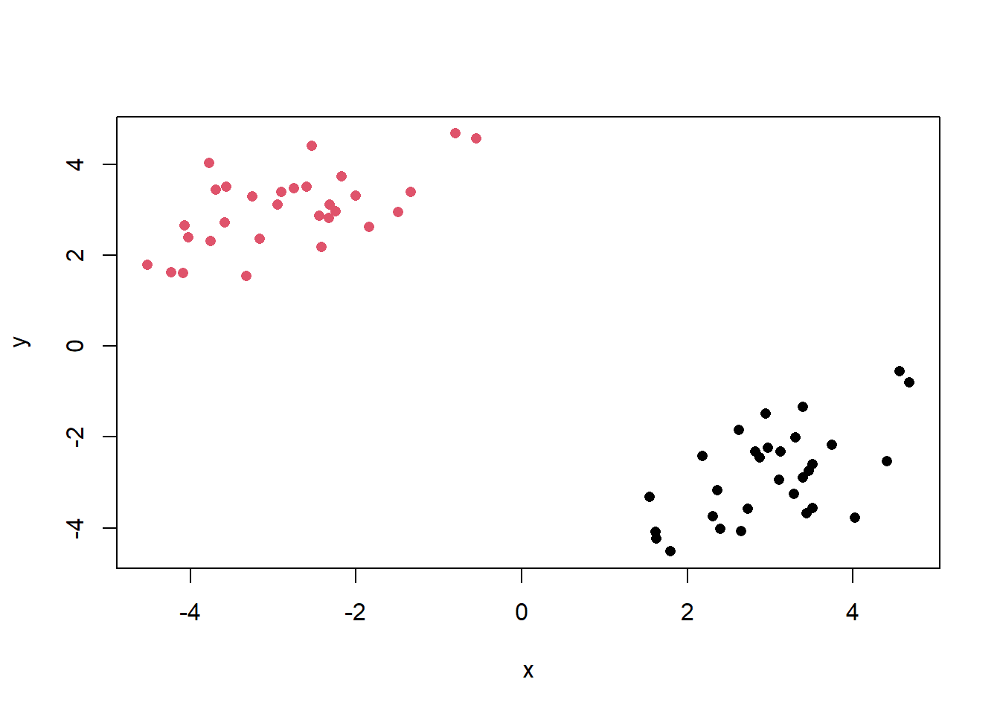
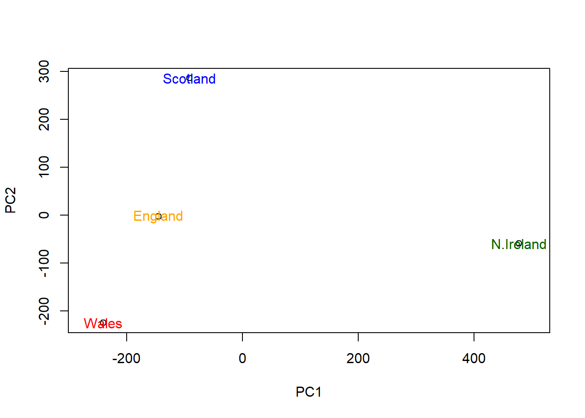
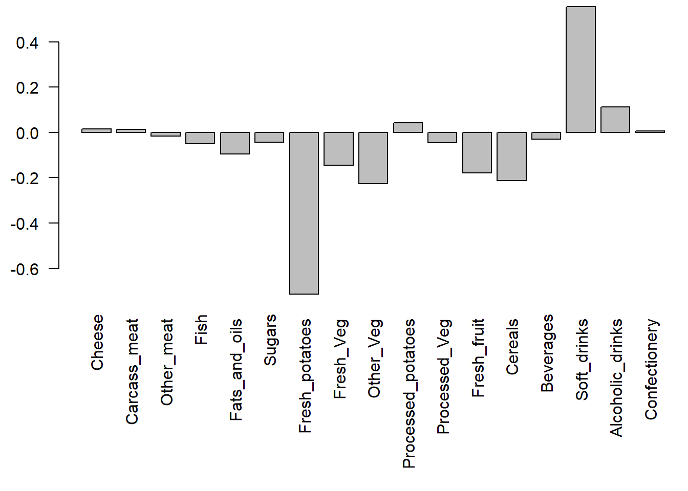

x <- rnorm(10000, mean = 3)
hist(x)
We will start today’s lab with clustering methods, in particular so called K-means. The main function for this in R is kmeans().
Let’s try it on some made up data where we know what the answer should be.
x <- rnorm(10000, mean = 3)
hist(x)
60 points
tmp <- c(rnorm(30, mean=3), rnorm(30, -3))
x <- cbind(x=tmp, y=rev(tmp))
head(x) x y
[1,] 3.120927 -2.313831
[2,] 3.507793 -3.568343
[3,] 1.621801 -4.229926
[4,] 2.183829 -2.420038
[5,] 2.398874 -4.020542
[6,] 2.947929 -1.493058We can pass this to the base R plot() function for a quick.
plot(x)
k <- kmeans(x, centers = 2, nstart = 20)
kK-means clustering with 2 clusters of sizes 30, 30
Cluster means:
x y
1 -2.823633 3.012943
2 3.012943 -2.823633
Clustering vector:
[1] 2 2 2 2 2 2 2 2 2 2 2 2 2 2 2 2 2 2 2 2 2 2 2 2 2 2 2 2 2 2 1 1 1 1 1 1 1 1
[39] 1 1 1 1 1 1 1 1 1 1 1 1 1 1 1 1 1 1 1 1 1 1
Within cluster sum of squares by cluster:
[1] 50.16165 50.16165
(between_SS / total_SS = 91.1 %)
Available components:
[1] "cluster" "centers" "totss" "withinss" "tot.withinss"
[6] "betweenss" "size" "iter" "ifault" Q1. How many points are in each cluster?
k$size[1] 30 30Q2. Cluster membership?
k$cluster [1] 2 2 2 2 2 2 2 2 2 2 2 2 2 2 2 2 2 2 2 2 2 2 2 2 2 2 2 2 2 2 1 1 1 1 1 1 1 1
[39] 1 1 1 1 1 1 1 1 1 1 1 1 1 1 1 1 1 1 1 1 1 1Q3. Cluster centers?
k$centers x y
1 -2.823633 3.012943
2 3.012943 -2.823633Q4. Plot my clustering results
plot(x, col=k$cluster, pch=16)
Q5. Cluster the data again with kmeans() into 4 groups and plot the results.
k4 <- kmeans(x, centers = 4, nstart = 20)
plot(x, col=k4$cluster, pch=16)
K-means is very popular mostly because it is fast and relatively straightforward to run and understand. It has a big limitation in that you need to tell it how many groups (k, or centers) you want.
The main function in base R is called hclust(). YOu have to pass it in a “distance matrix” not just your input data.
You can generate a distance matrix with the dist() function.
hc <- hclust( dist(x) )
hc
Call:
hclust(d = dist(x))
Cluster method : complete
Distance : euclidean
Number of objects: 60 plot(hc)
To find clusters (cluster membership vector) from a hclust() result we can “cut” the tree at a certain height that we like. For this we use the cutree() function.
plot(hc)
abline(h=8, col="red")
grps <- cutree(hc, h=8)table(grps)grps
1 2
30 30 Q6. Plot our hclust results.
plot(x, col=grps, pch=16)
#Principal Component Ananlysis
Read data showing the consumption in grams (per person, per week) of 17 different types of food-stuff measured and averaged in the four countries of the United Kingdom.
Let’s see how PCA can help us but first we can try conventional analysis.
url <- "https://tinyurl.com/UK-foods"
x <- read.csv(url)
x X England Wales Scotland N.Ireland
1 Cheese 105 103 103 66
2 Carcass_meat 245 227 242 267
3 Other_meat 685 803 750 586
4 Fish 147 160 122 93
5 Fats_and_oils 193 235 184 209
6 Sugars 156 175 147 139
7 Fresh_potatoes 720 874 566 1033
8 Fresh_Veg 253 265 171 143
9 Other_Veg 488 570 418 355
10 Processed_potatoes 198 203 220 187
11 Processed_Veg 360 365 337 334
12 Fresh_fruit 1102 1137 957 674
13 Cereals 1472 1582 1462 1494
14 Beverages 57 73 53 47
15 Soft_drinks 1374 1256 1572 1506
16 Alcoholic_drinks 375 475 458 135
17 Confectionery 54 64 62 41Q1. How many rows and columns are in your new data frame named x? What R functions could you use to answer this questions?
dim(x)[1] 17 5Preview the first 6 rows
head(x) X England Wales Scotland N.Ireland
1 Cheese 105 103 103 66
2 Carcass_meat 245 227 242 267
3 Other_meat 685 803 750 586
4 Fish 147 160 122 93
5 Fats_and_oils 193 235 184 209
6 Sugars 156 175 147 139We are first assigning names to the rows using the data in the first column, and then removing the first column.
# Note how the minus indexing works
rownames(x) <- x[,1]
x <- x[,-1]
head(x) England Wales Scotland N.Ireland
Cheese 105 103 103 66
Carcass_meat 245 227 242 267
Other_meat 685 803 750 586
Fish 147 160 122 93
Fats_and_oils 193 235 184 209
Sugars 156 175 147 139Let’s check the dimensions again.
dim(x)[1] 17 4An alternative approach to setting the correct row-names in this case would be to read the data file again and this time set the row.names argument of read.csv() to be the first column (i.e. use argument setting row.names=1), see below:
x <- read.csv(url, row.names=1)
head(x) England Wales Scotland N.Ireland
Cheese 105 103 103 66
Carcass_meat 245 227 242 267
Other_meat 685 803 750 586
Fish 147 160 122 93
Fats_and_oils 193 235 184 209
Sugars 156 175 147 139Q2. Which approach to solving the ‘row-names problem’ mentioned above do you prefer and why? Is one approach more robust than another under certain circumstances?
I prefer the second approach as it won’t keep removing the first column of the x table if run again.
barplot(as.matrix(x), beside=T, col=rainbow(nrow(x)))
Q3: Changing what optional argument in the above barplot() function results in the following plot?
We can change the beside argument to FALSE.
barplot(as.matrix(x), beside=F, col=rainbow(nrow(x)))
Q5: Generating all pairwise plots may help somewhat. Can you make sense of the following code and resulting figure? What does it mean if a given point lies on the diagonal for a given plot?
pairs(x, col=rainbow(10), pch=16)
If the point lies on the diagonal, it means that the consumption of that particular food matches between the two countries.
Q6. What is the main differences between N. Ireland and the other countries of the UK in terms of this data-set?
It seems like the plots show more off-diagonal points when N.Ireland is compared to the rest of the countries of the UK than when the Great Britain countries are compared between themselves.
PCA can help us make sense of these types of datasets. Let’s see how it works.
The main function in “base” R is called prcomp(). In this case we want to first take the trasnspose if our input x so the columns are the food types and the countries are the rows.
head( t(x) ) Cheese Carcass_meat Other_meat Fish Fats_and_oils Sugars
England 105 245 685 147 193 156
Wales 103 227 803 160 235 175
Scotland 103 242 750 122 184 147
N.Ireland 66 267 586 93 209 139
Fresh_potatoes Fresh_Veg Other_Veg Processed_potatoes
England 720 253 488 198
Wales 874 265 570 203
Scotland 566 171 418 220
N.Ireland 1033 143 355 187
Processed_Veg Fresh_fruit Cereals Beverages Soft_drinks
England 360 1102 1472 57 1374
Wales 365 1137 1582 73 1256
Scotland 337 957 1462 53 1572
N.Ireland 334 674 1494 47 1506
Alcoholic_drinks Confectionery
England 375 54
Wales 475 64
Scotland 458 62
N.Ireland 135 41pca <- prcomp( t(x) )
summary(pca)Importance of components:
PC1 PC2 PC3 PC4
Standard deviation 324.1502 212.7478 73.87622 3.176e-14
Proportion of Variance 0.6744 0.2905 0.03503 0.000e+00
Cumulative Proportion 0.6744 0.9650 1.00000 1.000e+00pca$x PC1 PC2 PC3 PC4
England -144.99315 -2.532999 105.768945 -4.894696e-14
Wales -240.52915 -224.646925 -56.475555 5.700024e-13
Scotland -91.86934 286.081786 -44.415495 -7.460785e-13
N.Ireland 477.39164 -58.901862 -4.877895 2.321303e-13Q7. Complete the code below to generate a plot of PC1 vs PC2. The second line adds text labels over the data points.
# Plot PC1 vs PC2
plot(pca$x[,1], pca$x[,2], xlab="PC1", ylab="PC2", xlim=c(-270,500))
text(pca$x[,1], pca$x[,2], colnames(x))
Q8. Customize your plot so that the colors of the country names match the colors in our UK and Ireland map and table at start of this document.
plot(pca$x[,1], pca$x[,2], xlab="PC1", ylab="PC2", xlim=c(-270,500))
text(pca$x[,1], pca$x[,2], colnames(x), col=c("orange", "red", "blue", "darkgreen"))
We can use the square of pca$sdev , which stands for “standard deviation”, to calculate how much variation in the original data each PC accounts for.
v <- round( pca$sdev^2/sum(pca$sdev^2) * 100 )
v[1] 67 29 4 0## or the second row here...
z <- summary(pca)
z$importance PC1 PC2 PC3 PC4
Standard deviation 324.15019 212.74780 73.87622 3.175833e-14
Proportion of Variance 0.67444 0.29052 0.03503 0.000000e+00
Cumulative Proportion 0.67444 0.96497 1.00000 1.000000e+00This information can be summarized in a plot of the variances (eigenvalues) with respect to the principal component number (eigenvector number), which is given below.
barplot(v, xlab="Principal Component", ylab="Percent Variation")
The “loadings” tell us how much the original variables (in our case the foods) contribute to the new variables i.e. the PCs
head(pca$rotation) PC1 PC2 PC3 PC4
Cheese -0.056955380 0.01601285 0.02394295 -0.694538519
Carcass_meat 0.047927628 0.01391582 0.06367111 0.489884628
Other_meat -0.258916658 -0.01533114 -0.55384854 0.279023718
Fish -0.084414983 -0.05075495 0.03906481 -0.008483145
Fats_and_oils -0.005193623 -0.09538866 -0.12522257 0.076097502
Sugars -0.037620983 -0.04302170 -0.03605745 0.034101334## Lets focus on PC1 as it accounts for > 90% of variance
par(mar=c(10, 3, 0.35, 0))
barplot( pca$rotation[,1], las=2 )
Q9: Generate a similar ‘loadings plot’ for PC2. What two food groups feature prominantely and what does PC2 maninly tell us about?
par(mar=c(10, 3, 0.35, 0))
barplot( pca$rotation[,2], las=2 )
Fresh potatoes and soft drinks are the most prominent in PC2. PC2 shows the second most variance in the data.